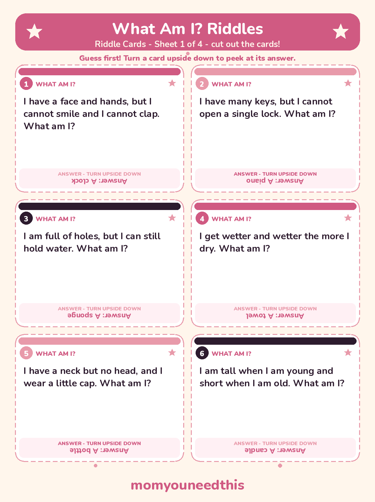
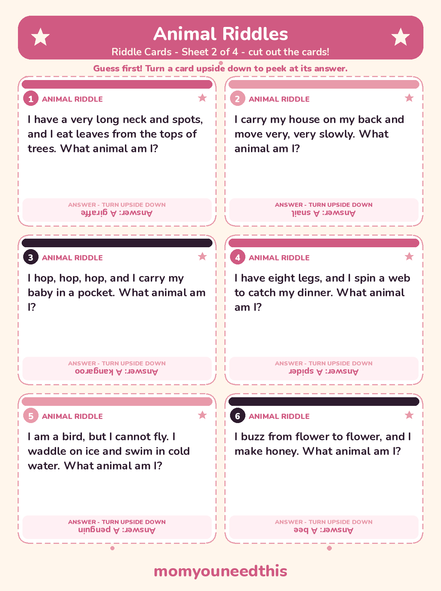
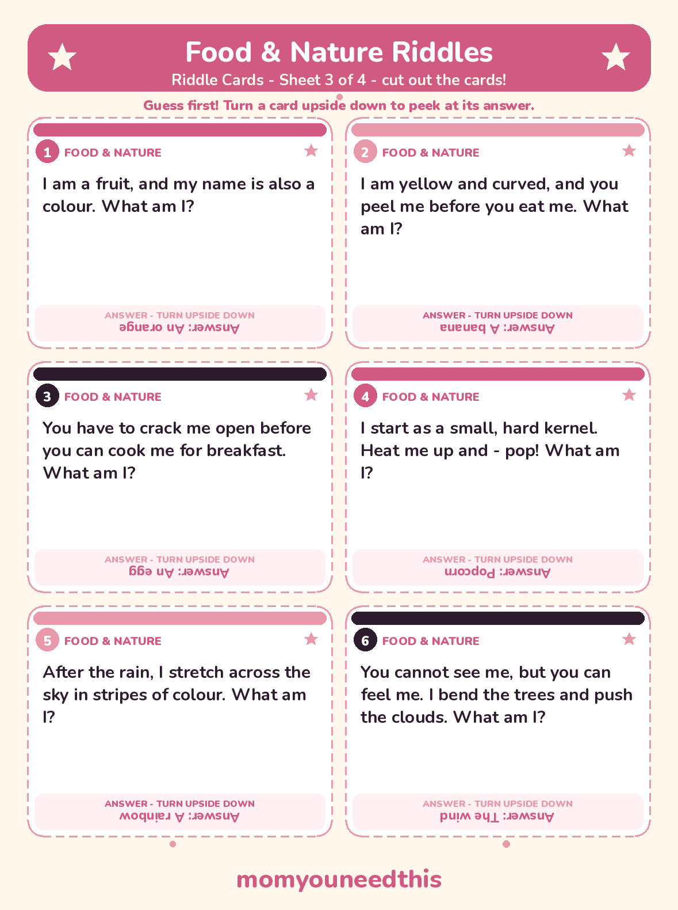
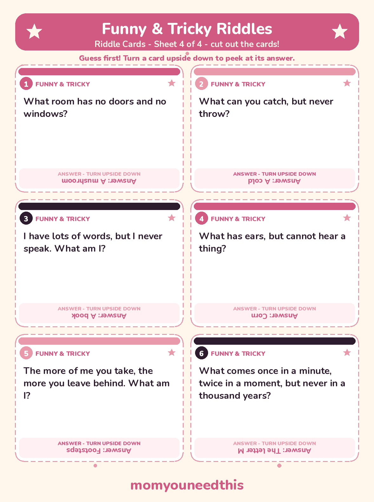

Riddles for Kids 68 Easy, Funny & Tricky Riddles With Answers
Sixty-eight riddles for kids, each with its answer hidden underneath — grouped into easy What Am I? and animal riddles, funny word riddles, food, nature and spring sets, and a harder round for older kids. Read one aloud, let everyone guess out loud, then peek together.
Last updated: October 25, 2026
Quick Answer
Looking for riddles for kids with answers? Here are 68 of them — What Am I?, animal, food, nature, spring and funny riddles for ages 5 to 10, plus a harder set for older kids. Every answer sits under its riddle, and 24 favourites are free printable cards below.
At a Glance
- Riddles: 68, in 7 groups
- Ages: 5–10 (harder set marked 🧠 for ages 8–10)
- Printables: 4 riddle card sheets (6 cards each, 24 riddles)
- Answers: Under every riddle on this page; upside down on the cards, so kids guess first
- Skills: Logic, careful reading, vocabulary
- Cost: Free — print at home
❓ What Am I Riddles
Start here. Every answer is a thing your child already knows — the trick is seeing it sideways, from its clues. Read the riddle, count to ten slowly, and let the guessing begin.
I have a face and hands, but I cannot smile and I cannot clap. What am I? Answer: A clock.
I have many keys, but I cannot open a single lock. What am I? Answer: A piano.
I run all day but I never walk. I have a mouth but I never talk, and a bed but I never sleep in it. What am I? Answer: A river — it runs, it meets the sea at its mouth, and it flows over a riverbed.
I am full of holes, but I can still hold water. What am I? Answer: A sponge.
I get wetter and wetter the more I dry. What am I? Answer: A towel.
I go up and up, but I never, ever come down. What am I? Answer: Your age.
I have a neck but no head, and I wear a little cap. What am I? Answer: A bottle.
I have lots of teeth, but I cannot bite anything. What am I? Answer: A comb.
I am tall when I am young and short when I am old. What am I? Answer: A candle.
I have one eye, but I cannot see a thing. What am I? Answer: A needle — the eye is the little hole the thread goes through.
I have four legs, but I never walk. I hold your dinner every night. What am I? Answer: A table.
The more you take away from me, the bigger I get. What am I? Answer: A hole — digging takes the dirt away, and the hole grows.
🦁 Animal Riddles
Every clue counts in this set — count the legs, listen for the sound, and picture where the animal lives before you guess.
I have a very long neck and spots, and I eat leaves from the tops of trees. What animal am I? Answer: A giraffe.
I look like a horse, but I wear black-and-white stripes from my nose to my tail. What animal am I? Answer: A zebra.
I carry my house on my back and move very, very slowly. What animal am I? Answer: A snail.
I am the biggest animal that walks on land. I have enormous ears and a trunk instead of a nose. What animal am I? Answer: An elephant.
I hop, hop, hop, and I carry my baby in a pocket. What animal am I? Answer: A kangaroo.
I fly, but I am not a bird. I sleep hanging upside down, and I only come out at night. What animal am I? Answer: A bat.
I have eight legs, and I spin a web to catch my dinner. What animal am I? Answer: A spider.
I live on a farm, I eat grass all day, and I say "moo." What animal am I? Answer: A cow.
I am a bird, but I cannot fly. I waddle on ice and swim in cold water. What animal am I? Answer: A penguin.
I can change the colour of my skin to hide in leaves and branches, and my eyes can look in two directions at once. What animal am I? Answer: A chameleon.
I buzz from flower to flower, and I make honey. What animal am I? Answer: A bee.
I swim in the sea with flippers and a hard shell, and I crawl onto the sand to lay my eggs. What animal am I? Answer: A sea turtle.
🍎 Food Riddles
A whole set you can play at the table while dinner cooks — the answers are sitting in your kitchen right now.
I am a fruit, and my name is also a colour. What am I? Answer: An orange.
I grow under the ground and my skin is brown. I have eyes, but I cannot see. You can mash me, bake me or turn me into fries. What am I? Answer: A potato — the little dents on a potato are called eyes.
I am yellow and curved, and you peel me before you eat me. What am I? Answer: A banana.
I am big and round with a green rind. Inside I am red and sweet and full of little black seeds. What am I? Answer: A watermelon.
I am made from milk, and some of me is full of holes. Mice in cartoons dream about me. What am I? Answer: Cheese.
You have to crack me open before you can cook me for breakfast. What am I? Answer: An egg.
We are tiny, round and green, and we all live together inside a pod. What are we? Answer: Peas.
I look like a tiny green tree, with a thick trunk and a leafy top — and you can eat me. What am I? Answer: Broccoli.
I start as a small, hard kernel. Heat me up and - pop! What am I? Answer: Popcorn.
I wear layer after layer of coats, and if you cut me, I might make your eyes water. What am I? Answer: An onion.
🌦️ Nature & Weather Riddles
Look out of the window — most of these answers are out there today, falling, blowing, shining or following you down the street.
I fall from the sky in winter, soft and white. Children catch me on their tongues and build snowmen out of me. What am I? Answer: Snow.
I rise in the morning and light up the whole day. You should never look straight at me. What am I? Answer: The sun.
On a sunny day I follow you everywhere, copying everything you do. When it gets dark, I disappear. What am I? Answer: Your shadow.
In a storm, I flash across the sky for just a second — so fast that if you blink, you miss me. What am I? Answer: Lightning.
You can hear me rumbling in a storm, but you can never see me. I always seem to arrive after the lightning. What am I? Answer: Thunder — you see the lightning first because light travels faster than sound.
After the rain, I stretch across the sky in stripes of colour. What am I? Answer: A rainbow.
I am made of tiny drops of water. I fall from the clouds, tap on the roof, and fill the puddles. What am I? Answer: Rain.
You cannot see me, but you can feel me. I bend the trees and push the clouds. What am I? Answer: The wind.
I start as one tiny seed. Give me years of sun and rain and I will grow tall enough to give you shade and hold a swing. What am I? Answer: A tree.
I glow in the night sky, and through the month I change shape — sometimes a round circle, sometimes a thin crescent. What am I? Answer: The moon.
🌸 Spring Riddles
A small set for the season of new beginnings — baby animals, waking seeds and the first flowers of the year.
I hatch out of an egg in spring, small, fluffy and yellow, cheeping for my mother. What am I? Answer: A chick.
I begin as a caterpillar. I rest inside a chrysalis, then wake up with wings. What am I? Answer: A butterfly.
I hide all winter as a tiny seed under the soil. Spring rain and sunshine wake me, and I push my first green leaves up into the light. What am I? Answer: A sprout.
I am a baby sheep, born in spring, with a soft woolly coat. I follow my mother around the field. What am I? Answer: A lamb.
I grow from a bulb planted in the ground, and in spring I open into a bright cup of petals — red, yellow or pink. What am I? Answer: A tulip.
I have long ears, a fluffy tail and strong back legs for hopping through the spring grass. What am I? Answer: A bunny.
😄 Funny & Silly Riddles
These answers are jokes wearing a riddle costume. Groans are allowed — groans are how you know a silly riddle worked.
What room has no doors and no windows? Answer: A mushroom.
What belongs to you, but everyone else uses it much more than you do? Answer: Your name.
What can you catch, but never throw? Answer: A cold.
What has one head, one foot and four legs? Answer: A bed — the head of the bed, the foot of the bed, and its four legs.
What goes up and down all day, but never actually moves? Answer: A staircase.
I have lots of words, but I never speak. What am I? Answer: A book.
What has a ring, but no finger to wear it on? Answer: A telephone — its ring is a sound, not jewellery.
What has hundreds of needles, but never sews a single stitch? Answer: A pine tree.
What has ears, but cannot hear a thing? Answer: Corn — it grows in ears, but not the listening kind.
What has its bottom at the very top? Answer: Your legs — your bottom sits right on top of them.
🧠 Harder Riddles for Older Kids
The stretch set, for ages 8 to 10 — and for any grown-up who is feeling confident. These need a second read and a slower think.
The more of me you take, the more you leave behind. What am I? Answer: Footsteps — every step you take leaves one behind you.
I repeat everything you say, but I have no mouth at all. You can hear me in the mountains and in big, empty halls. What am I? Answer: An echo.
Forwards, I am very heavy. Backwards, I am not. What word am I? Answer: The word TON — spelled backwards, it reads NOT.
I can fill a whole room, but I do not take up any space at all. What am I? Answer: Light.
What has thirteen hearts, but no body and no bones? Answer: A deck of cards — every deck has thirteen heart cards.
What comes once in a minute, twice in a moment, but never in a thousand years? Answer: The letter M.
What runs all the way around a whole yard, but never moves an inch? Answer: A fence.
I can show you cities with no houses, forests with no trees, and rivers with no water. What am I? Answer: A map.
✂️ The Printable Riddle Cards
Twenty-four of the riddles for kids on this page are also cut-out cards — six What Am I? riddles, six animal riddles, six food & nature riddles and six funny & tricky ones. On the cards, each answer is printed small and upside down at the bottom, so the guesser has to commit to an answer before anyone peeks. Print the four sheets, cut along the dashed lines, and keep a set in the car, a school bag or the dinner-table drawer.

✂️ Download Your Free Riddle Cards — Sheet 1
6 What Am I? riddles on cut-out cards — sheet 1 of 4.
⬇️ Download Free Riddle Cards 🖨️ Print🎁 Free printable for ages 5–10

✂️ Download Your Free Riddle Cards — Sheet 2
6 animal riddles on cut-out cards — sheet 2 of 4.
⬇️ Download Free Riddle Cards 🖨️ Print🎁 Free printable for ages 5–10

✂️ Download Your Free Riddle Cards — Sheet 3
6 food & nature riddles on cut-out cards — sheet 3 of 4.
⬇️ Download Free Riddle Cards 🖨️ Print🎁 Free printable for ages 5–10

✂️ Download Your Free Riddle Cards — Sheet 4
6 funny & tricky riddles on cut-out cards — sheet 4 of 4.
⬇️ Download Free Riddle Cards 🖨️ Print🎁 Free printable for ages 5–10
🌱 Why Riddles Are Good Brain Food
Riddles for kids are small logic puzzles disguised as a game. To solve one, a child has to read or listen carefully, hold every clue in mind at once, and then test a guess against all of them — a guess that fits only one clue is usually the wrong one, and noticing that is real reasoning. Riddles are also vocabulary in disguise: words like trunk, rind, pod and cap each carry two meanings, and a riddle only works when a child catches the second one. That double-meaning skill is the same one that sits underneath jokes, stories and reading comprehension.
There is a quieter benefit too. A riddle cannot be rushed: the answer rewards the child who slows down, thinks it through and is willing to be wrong once before being right. Played out loud with family, it adds turn-taking, listening to other people's guesses, and the very particular joy of being the only one at the table who figured it out.
🗺️ Turn Riddles Into Treasure Hunt Clues
Any riddle on this page can become a treasure hunt clue: pick a riddle whose answer is a place or a thing in your home, write it on a slip of paper, and hide the next clue — or the treasure — right there. Families looking for treasure hunt riddles with answers ready to copy will find this whole page works that way, because every answer is printed with its riddle.
Two easy starters: the clock riddle sends hunters to wherever your clock hangs, so tape the next clue right underneath it. The egg riddle sends them to the fridge, and the book riddle sends them to the bookshelf. For a ready-made hunt with all the searching done for you, try our printable Christmas scavenger hunt in December and the Easter scavenger hunt in spring.
🖨️ How to Use These Riddle Cards
- Play them in the car. One person reads a riddle aloud and everyone else shouts guesses. The reader is the judge — no peeking at the upside-down answer until every guess is in.
- Run dinner-table rounds. Pass the cards around the table and let each person read one riddle to the group. Keep a tally on a napkin; the harder set is worth double.
- Use them as classroom brain breaks. Read one riddle to the class, give everyone a quiet minute to think, then take hands-up guesses. One card is a perfect two-minute reset between lessons.
- Turn them into treasure-hunt clues. Pick cards whose answers name a place in your home, hide each card where the previous answer points, and put a small prize at the end of the trail.
🧩 More Games & Activities for Kids
🔍 Christmas Scavenger Hunt
A printable hunt for all the sights of the season, indoors and out. Start the hunt.
🐣 Easter Scavenger Hunt
A spring hunt with picture clues little kids can follow. Start the hunt.
🤣 Knock Knock Jokes
24 clean knock knock jokes little kids can memorize and tell, with printable cards. Tell a knock knock joke.
📚 Learning Activities
The full hub of free printable activities for toddlers and preschoolers. Browse activities.
🎨 Free Coloring Pages
Hundreds of free coloring sheets to print for every age. See the coloring pages.
❓ Riddles for Kids FAQ
Are these riddles for kids aged 5 to 10?
Yes — the 68 riddles are grouped so children can start where they are: the What Am I? and animal sets suit most 5- to 7-year-olds, the funny riddles land from about age 6, and the harder set genuinely stretches 8- to 10-year-olds. Expect a few grown-ups to get stuck too.
Are the answers included?
Yes — every riddle on this page has its answer printed right underneath it in a smaller pink line, so a parent or teacher can run the game without spoiling it. On the printable cards, each answer is printed small and upside down at the bottom of the card, so kids guess first and peek after.
Can I print the riddles?
Yes — 24 of the riddles are also on four printable riddle card sheets (6 cards per sheet), free to print at home with no signup. Cut along the dashed lines to make a card set for the car, the classroom or the dinner table.
How do I use riddles as treasure hunt clues?
Choose a riddle whose answer is a place or object in your home — the clock, the fridge, a book — and hide the next clue there. Write or print the riddle, hand it to your hunters, and let the answer lead them to the next stop. The section above this FAQ walks through two worked examples.
Are the riddle cards free?
Yes — the cards and this whole page are free. Print as many sets as you like for home or classroom use.